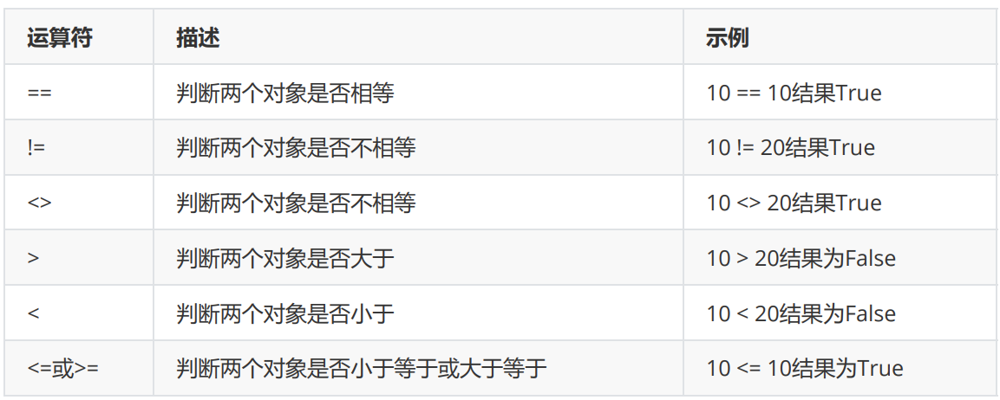

Python的注释 Python的注释分为两种，分别为单行注释和多行注释
单行注释：#被注释的内容
多行注释：‘’‘被注释内容’‘’ “”“被注释内容”“”
1 2 3 单行注释：'''被注释内容''' """被注释内容"""
Python的基础数据类型 Python与C语言不同
其数据类型主要有int float str complex（主要类型）
查看一个变量的类型方式 使用type(a)函数
1 2 3 4 a = 2 **64 print (type (a)) 2 **60 print (type (b))
运行结果
1 2 <class 'int' >class 'int' >
布尔值（True，False） 布尔值也叫做布尔类型，总共有两个值，一个为True（真），一个为False（假），一般被用于逻辑判断
1 2 3 a = 3 5 print (a < b, a > b , a != b)
运行结果
字符串 字符串是在Python中运用最为广泛的数据类型，所有的从键盘读入的数据，默认都是字符串类型，如果需要进行类型的变化，需要使用相关函数强行进行转换，但此时需要注意，如果输入的字符无法被转换，程序会报错。
字符串拼接 1 2 3 a = 'eagle ' 'welcome ' print (b + a,'*' * 3 ,a * 3 )
将两个字符串进行相加，实际这个操作的名称为字符串的拼接
运行结果
1 welcome eagle *** eagle eagle eagle
字符串的索引与切片 1 2 3 4 5 6 7 8 9 10 11 12 13 a = 'ABCDEFGHIJK' print (a[0 ], a[-11 ])print (a[3 ])print (a[5 ])print (a[7 ])'ABCDEFGHIJK' print (a[0 :3 ])print (a[2 :5 ])print (a[0 :]) print (a[0 :-1 ]) print (a[0 :5 :2 ]) print (a[5 :0 :-2 ])
在一个字符串中，Python会对字符串自动进行索引，从正序来看，编号为09；从逆序来看，编号为-1 10
运行结果
1 2 3 4 5 6 7 8 9 10 A
字符串常用方法 字母大小写的转换 1 2 3 4 5 6 7 8 9 10 words = "beautiful is better than ugly." print (words.capitalize()) print (words.swapcase()) print (words.title()) ''' 运行结果 Beautiful is better than ugly. BEAUTIFUL IS BETTER THAN UGLY. Beautiful Is Better Than Ugly. '''
将符号填充到字符两侧 1 2 3 4 5 6 7 8 9 10 "test" 20 ,"*" )print (ret)''' 运行结果 ********test******** '''
统计字符串中某个元素出现的个数 1 2 3 4 5 6 7 8 9 10 11 12 13 14 15 16 17 18 19 20 21 22 23 24 25 26 27 28 29 30 31 32 33 34 35 36 37 38 39 40 41 42 43 44 45 46 47 48 49 50 51 52 53 54 55 56 57 58 59 60 61 62 63 64 65 66 67 68 69 70 71 72 73 74 75 76 "e" ,0 ,30 )print (ret)''' 运行结果 3 ''' "aisdjioadoiqwd12313assdj" print (a.startswith("a" ))print (a.endswith("j" ))print (a.startswith('sdj' ,2 ,5 ))print (a.endswith('ado' ,7 ,10 ))''' 运行结果 True True True True ''' print (a.find('sdj' ,1 ,10 )) print (a.index('sdj' ,1 ,10 )) ''' 运行结果 2 2 ''' ' ' )print (ret)'beautiful' , 'is' , 'better' , 'than' , 'ugly.' ]' ' ,2 ) print (ret)''' 运行结果 ['beautiful is better', 'than', 'ugly.'] ''' print ('{} {} {}' .format ('aaron' ,18 ,'teacher' ))print ('{1} {0} {1}' .format ('aaron' ,18 ,'teacher' ))print ('{name} {age} {job}' .format (job='teacher' ,name='aaron' ,age=18 ))'****asdasdasd********' print (a.strip('*' ))print (a.lstrip('*' ))print (a.rstrip('*' ))print (words.replace('e' ,'a' ,2 )) print (words.isalnum()) print (words.isalpha()) print (words.isdigit())
基本运算符 基本运算符
比较运算 
赋值运算
逻辑运算
在没有 () 的情况下 not 优先级高于 and，and 优先级高于 or，即优先级关系为()>not>and>or，同一 优先级从左往右计算。
x or y , x 为真，值就是 x，x 为假，值是 y； x and y, x 为真，值是 y,x 为假，值是 x。
成员运算
Python运算的优先级
Python的数据类型 数据类型的总结 元祖为圆括号表示；列表为方括号表示；字典为大括号表示，但要求{键：值}一一对应；集合为一种特殊类型，将列表使用set进行强制转换，表示时使用花括号直接与列表方式类似
书写方式 可不可变 顺序 列表 方括号[] 可变 有 元组 圆括号() 可变 有 字典 花括号{键:值} 可变 有 集合 花括号{} 可变 没有
元组tuple（其中的元素内容不可被更改） 元组被称为只读列表，即数据可以被查询，但不能被修改。
元组与列表的区别：元祖与链表的区别所在：即元祖采用的是圆括号将其中的数据类型包含住，但是其中已经定义的数据类型是不可改动的，而列表其中的数据类型是可以被改动的。
tuple其实不可变的是地址空间，如果地址空间里存的是可变的数据类型的话，比如列表就是可变的
参考博客 https://blog.csdn.net/machi1/article/details/86601119
总结一下，即为元组内部的元素不能被改变，但是如果在元组里面有一个列表，那么列表内的元素是可以被修改的。
列表 list 列表相比于字符串，不仅可以储存不同的数据类型，而且可以储存大量数据，32 位 python 的限制是 536870912 个元素,64 位 python 的限制是 1152921504606846975 个元素。而且列表是有序的，有索引值，可切片 ，方便取值。
列表的增加元素 1 2 3 4 5 6 7 8 9 10 11 12 13 14 15 li = [1 ,'a' ,2 ,'d' ,4 ]0 ,22 ) print (li)'ddd' ) print (li)'q,a,w' ]) print (li)'q,a,w' ,'das' ]) print (li)
运行结果
1 2 3 4 [22 , 1 , 'a' , 2 , 'd' , 4 ]22 , 1 , 'a' , 2 , 'd' , 4 , 'ddd' ]22 , 1 , 'a' , 2 , 'd' , 4 , 'ddd' , 'q,a,w' ]22 , 1 , 'a' , 2 , 'd' , 4 , 'ddd' , 'q,a,w' , 'q,a,w' , 'das' ]
删除操作 1 2 3 4 5 6 7 8 9 li = [1 ,'a' ,2 ,'d' ,4 ,5 ,'f' ]1 ) print (a)del li[1 :3 ] print (li)'f' )print (li)print (li)
运行结果
1 2 3 4 a1 , 4 , 5 , 'f' ]1 , 4 , 5 ]
改动操作 1 2 3 4 5 li = [1 ,'a' ,2 ,'d' ,4 ,5 ,'f' ]1 ] = 'aaa' print (li)2 :3 ] = [3 ,'e' ]print (li)
运行结果
1 2 [1 , 'aaa' , 2 , 'd' , 4 , 5 , 'f' ]1 , 'aaa' , 3 , 'e' , 'd' , 4 , 5 , 'f' ]
查找操作 使用切片去查，或者循环去查
其他操作 1 2 3 4 5 6 7 li = [1 ,2 ,4 ,5 ,4 ,2 ,4 ]print (li.count(4 )) print (li.index(2 )) print (li)print (li)
运行结果
1 2 3 4 3 1 1 , 2 , 2 , 4 , 4 , 4 , 5 ]5 , 4 , 4 , 4 , 2 , 2 , 1 ]
字典 dict 字典是python中唯一的映射类型，采用键值对（key-value）的形式存储数据。可哈希表示key必须是不可变类型，如：数字、字符串、元组。
在python3.6以后字典就是有顺序的了
参考博客 https://www.cnblogs.com/xieqiankun/p/python_dict.html
增加操作 1 2 3 4 5 6 7 8 9 10 11 12 13 14 15 dic = {"age" :18 , "name" :"aaron" }'li' ] = ["a" ,"b" ,"c" ]print (dic)'k' ,'v' )print (dic)'k' ,'v1' )print (dic)'age' : 18 , 'name' : 'aaron' , 'li' : ['a' , 'b' , 'c' ]}'age' : 18 , 'name' : 'aaron' , 'li' : ['a' , 'b' , 'c' ], 'k' : 'v' }'age' : 18 , 'name' : 'aaron' , 'li' : ['a' , 'b' , 'c' ], 'k' : 'v' }
删除操作 1 2 3 4 5 6 7 8 9 10 11 12 13 14 15 16 17 dic = {"age" :18 , "name" :"aaron" }'age' )print (dic_pop)'sex' ,'查无此项' )print (dic_pop)'age' ] = 18 print (dic)del dic['name' ]print (dic)'name' ] = 'demo' print (dic_pop)print (dic,dic_clear)
更改操作 1 2 3 4 5 6 7 8 9 10 11 dic = {"age" :18 , "name" :"aaron" , 'sex' :'male' }"age" :30 , "name" :'demo' }print (dic2)'age' ] = 30 print (dic2)
查找操作 1 2 3 4 5 6 7 8 dic = {"age" :18 , "name" :"aaron" , 'sex' :'male' }'name' ]print (value)'abc' ,'查无此项' )print (value)
其他操作 1 2 3 4 5 6 7 8 9 10 11 12 13 dic = {"age" :18 , "name" :"aaron" , 'sex' :'male' }for i in dic.items():print (i)for key,value in dic.items():print (key,value)for i in dic:print (i)print (keys,type (keys))print (value,type (value))
集合set 集合是无序的，不重复，确定性的数据集合，它里面的元素是可哈希的(不可变类型)，但是集合本身是不可哈希（所以集合做不了字典的键）的。
以下是集合最重要的两点： 去重，把一个列表变成集合，就自动去重了。 关系测试，测试两组数据之前的交集、差集、并集等关系。
创建集合 1 2 3 set1 = set ({1 ,2 ,'barry' })1 ,2 ,'barry' }print (set1,set2)
集合的增 1 2 3 4 5 6 7 8 9 10 11 12 13 14 set1 = {'abc' ,'def' ,123 ,'asdas' }'qwer' )print (set1)'A' )print (set1)'哈哈哈' )print (set1)1 ,2 ,3 ])print (set1)
集合的删 1 2 3 4 5 6 7 8 9 10 11 12 set1 = {'abc' ,'def' ,123 ,'asdas' }'abc' )print (set1)print (set1)print (set1)del set1print (set1)
集合的其他操作 1 2 3 4 5 6 7 8 9 10 11 12 13 14 15 16 17 18 19 20 21 22 23 24 25 26 27 28 29 30 31 32 33 34 1 ,2 ,3 ,4 ,5 }3 ,4 ,5 ,6 ,7 }print (set1 & set2)print (set1.intersection(set2))1 ,2 ,3 ,4 ,5 }3 ,4 ,5 ,6 ,7 }print (set1 | set2)print (set2.union(set1))1 ,2 ,3 ,4 ,5 }3 ,4 ,5 ,6 ,7 }print (set1 - set2)print (set1.difference(set2))1 ,2 ,3 ,4 ,5 }3 ,4 ,5 ,6 ,7 }print (set1 ^ set2)print (set1.symmetric_difference(set2))
子集与超集 当一共集合的所有元素都在另一个集合里，则称这个集合是另一个集合的子集，另一个集合是这个集合的超集
是一个判断的函数，返回的是布尔值
1 2 3 4 5 6 set1 = {1 ,2 ,3 }1 ,2 ,3 ,4 ,5 ,6 }print (set1 < set2)print (set1.issubset(set2)) print (set2 > set1)print (set2.issuperset(set1))
frozenset不可变集合，让集合变成不可变类型 1 2 3 4 5 1 ,2 ,3 ,4 ,5 ,6 }frozenset (set1)print (s,type (s))7 )
流程控制之 --if f…else … 可以有多个分支条件 1 2 3 4 5 6 7 8 9 10 if 条件:elif 条件:elif 条件:elif 条件:else :
1 2 3 4 5 6 7 8 9 10 11 12 13 14 15 16 17 18 9 if num >= 0 and num <= 10 : print 'hello' 10 if num < 0 or num > 10 : print 'hello' else :print 'undefine' 8 if (num >= 0 and num <= 5 ) or (num >= 10 and num <= 15 ):print 'hello' else :print 'undefine'
流程控制之 --while 基本循环 如果条件为真，那么循环体则执行
如果条件为假，那么循环体不执行
循环中止语句 break 用于完全结束一个循环，跳出循环体执行循环后面的语句
continue 和 break 有点类似，区别在于 continue 只是终止本次循环，接着还执行后面的循环，break 则完全终止循环
while … else … while 后面的 else 作用是指，当 while 循环正常执行完，中间没有被 break 中止的话，就会执行 else 后面的语句
其他（for，enumerate，range） for循环：用户按照顺序循环可迭代对象的内容。
1 2 3 4 5 6 7 8 9 s = '先帝创业未半而中道崩殂，今天下三分，益州疲弊，此诚危急存亡之秋也。' for i in s:print (i)'甲' ,'乙' ,'丙' ,'丁' ]for i in li:print (i)'a' :1 ,'b' :2 ,'c' :3 }for k,v in dic.items():print (k,v)
enumerate：枚举，对于一个可迭代的（iterable）/可遍历的对象（如列表、字符串），enumerate将 其组成一个索引序列，利用它可以同时获得索引和值。
运行出来着的是已元祖的形式出现，key是其序列，values为值
1 2 3 4 5 6 7 8 9 li = ['甲' ,'乙' ,'丙' ,'丁' ]for i in li:print (i)for i in enumerate (li):print (i)for index,value in enumerate (li):print (index,value)for index,value in enumerate (li,100 ): print (index,value)
range：指定范围，生成指定数字。
使用for循环进行数字的叠加
1 2 3 4 5 6 7 8 for i in range (1 ,10 ):print (i)for i in range (1 ,10 ,2 ): print (i)for i in range (10 ,1 ,-2 ): print (i)